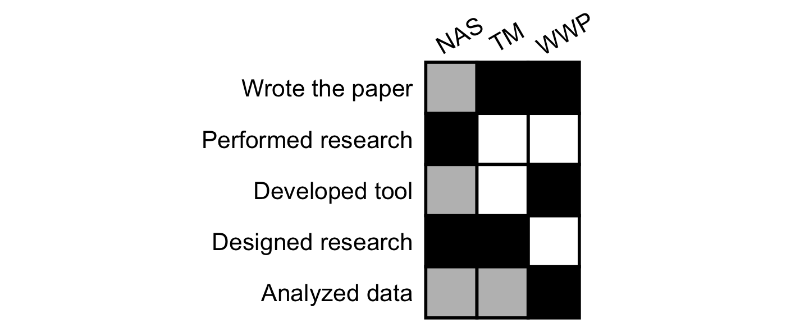
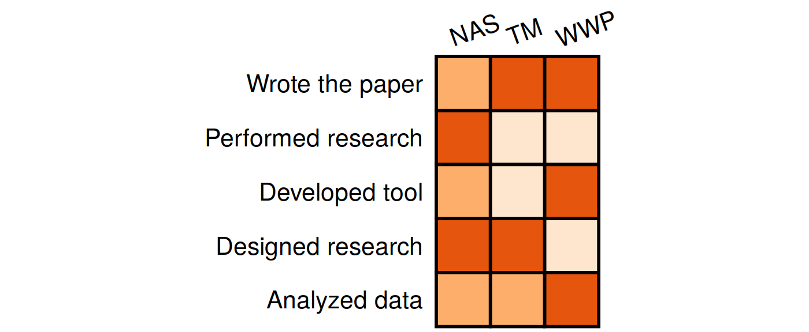

The goal of contribution is to generate contribution table for credit assignment in a project. This is inspired by Nick Steinmetz (see twitter https://twitter.com/SteinmetzNeuro/status/1147241138291527681).
Authors contributions sections are new and still don’t appear in major journals, but can be improved. Rather than text listing each author’s contributions, the same data can be presented as a table with rows corresponding to contributions and columns for each author.
Advantages include:
Graphics are faster and easier to comprehend. They are also easier to locate in the document.
This format can be readily augmented with additional information, such as distinguishing between ‘major’ and ‘minor’ contributions of each type.
This format can be read as easily in either direction, answering both “Who did X?” and “What did person Y do?” equally.
This format lends itself to a nice extension for including your author contribution information on your CV: a similar table where each column is one of your papers.
A difficulty with this is the diversity of terminology used, which would be helped by refinement and more widespread adoption of the CRediT framework (https://www.casrai.org/credit.html ).
Feature
- Support table type
- 3-level contribution (i.e. ‘None’, ‘Minor’ and ‘Major’)
- numeric contribution
- Dataset
palettecontains 27 color maps
Installation
You can install the released version of contribution from CRAN with:
install.packages("contribution")And the development version from GitHub with:
# install.packages("devtools")
devtools::install_github("openbiox/contribution")Basic example
This is a basic example which shows you how to plot a simple contribution table:
library(contribution)
data("demo")
demo
#> # A tibble: 5 x 4
#> Class WWP NAS TM
#> <chr> <chr> <chr> <chr>
#> 1 Designed research <NA> Major Major
#> 2 Performed research <NA> Major <NA>
#> 3 Developed tool Major Minor <NA>
#> 4 Analyzed data Major Minor Minor
#> 5 Wrote the paper Major Minor MajorThe accepted data format is a data.frame whose first column show the role and the other columns show the people or projects. This format is easy to create using R or other tools like Excel.
For a 3-level contribution table, only Minor and Major are valid, a NA value should put in cell for no contribution.
generate(demo)
The white box represents no contribution, the grey box represents minor contribution, and the black box represents major contribution.
The table is nice, easy to read. The result is a ggplot object, so you can modify in your way!
You can also use other colors and scale_fill_* function from ggplot2 to map colors:
library(ggplot2)
generate(demo, text_angle_x = 20, color_map = scale_fill_brewer(palette ="Oranges"))
When it is not easy to see the meaning of color, you can show the legend.
generate(demo, text_angle_x = 20, color_map = scale_fill_brewer(palette ="Set1"), show_legend = TRUE)
More usage please see online documentation.